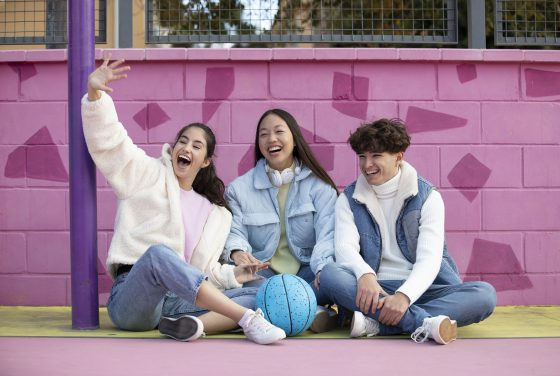

Positive Peer-group: Pentingnya Memilih Pergaulan pada Masa Remaja
Dipublikasikan pada 5 September 2024 by Hanifah Sholihah
Fase kehidupan individu yang menginjak masa remaja pada umumnya diperkirakan dimulai sekitar masa pubertas dan berakhir ketika seseorang mencapai tingkat kemandirian seperti orang dewasa. Masa remaja merupakan periode kehidupan pada rentang usia 10 hingga 24 tahun yang ditandai dengan peningkatan kepekaan terhadap rangsangan sosial dan kebutuhan akan interaksi dengan teman sebaya (Orben dkk., 2020). Masa remaja sangat penting bagi perkembangan sosial, yang ditandai oleh semakin pentingnya hubungan teman sebaya dibandingkan dengan keluarga, dan semakin besarnya ketidakstabilan serta kompleksitas hubungan sosial (Crone & Dahl, dalam Somerville, 2013). Masa perkembangan remaja juga mencakup beberapa perubahan psikososial terbesar dan paling dramatis dalam rentang hidup manusia (Rapee dkk., 2019). Peer-group memainkan peran penting dalam proses eksplorasi dan pengembangan identitas pada masa remaja. Peer-group merupakan kelompok teman sebaya dengan usia yang sama, berteman cukup dekat, dan berbagi aktivitas yang sama (Castrogiovanni, 2002). Status peer-group menjadi semakin penting hingga sering kali menyebabkan individu bersaing untuk mendapatkan perhatian dari kelompok yang berada di puncak tingkatan sosial. Kondisi tersebut berpotensi membuat mereka lebih rentan terhadap konflik peer-group (Meuwese dkk., 2017). Dibandingkan dengan anak-anak, remaja menghabiskan lebih banyak waktu bersama teman sebayanya, sehingga hal tersebut dapat turut memperbesar dampak peer-group terhadap perilaku remaja (Meuwese dkk., dalam Rapee dkk., 2019).
Peer-group dapat berperan penting dalam pengambilan keputusan pada masa remaja (Ciranka & van den Bos, 2019). Dalam membuat keputusan biasanya remaja cenderung lebih memilih gaya keputusan yang memuaskan atau berupaya untuk memaksimalkan keuntungan yang didapat (de Jesús Cardona-Isaza, 2022). Mereka bisa lebih rasional, berorientasi pada tindakan atau malah menghindar, dan mandiri atau malah bergantung (Bruine de Bruin dkk., 2015). Dalam proses pengambilan keputusan, remaja juga melibatkan peer-groupnya untuk mendapatkan kepastian sehingga mereka yakin dengan apa yang mereka putuskan. Remaja melalui berbagai proses dalam pengambilan keputusan (Henneberger dkk, 2021). Proses pertama adalah seleksi teman sebaya, yaitu ketika remaja memilih untuk berinteraksi satu sama lain. Misalnya, remaja yang rajin ikut kegiatan keagamaan di tempat ibadah akan cenderung memilih teman dengan norma dan perilaku yang sama, serta membatasi diri dari remaja yang berperilaku melanggar norma agama.
Proses kedua adalah sosialisasi peer-group, yaitu ketika perilaku remaja dibentuk oleh pengaruh lingkungan teman sebaya. Misalnya, perilaku dan norma taat beragama pada remaja turut dibentuk oleh teman-teman mereka yang menjalankan norma dan perilaku taat beragama. Oleh karena itu, dampak dari seleksi dan sosialisasi peer-group sangat kuat pada masa remaja yang menjadi periode penting bagi orientasi sosial terhadap teman sebaya (Fuligni, 2019). Teori pembelajaran sosial mengemukakan bahwa perilaku remaja dibentuk oleh perilaku peer-group melalui keteladanan dan penguatan sosial, terutama ketika penguatan sosial tersebut berasal dari kelompok teman sebaya yang diinginkan (Bandura, 1977). Berdasarkan sudut pandang tersebut, remaja akan cenderung memilih teman sebaya dan perilaku yang diinginkan, serta mencontoh perilaku teman sebaya tersebut, sehingga terjadilah proses sosialisasi melalui penguatan. Misalnya, remaja yang mengamati bahwa teman-temannya rajin membuat kreasi daur ulang sampah untuk diperjualbelikan di internet akan cenderung tertarik untuk ikut terlibat dan mencontoh kreasi teman-temannya untuk menerima penguatan. Selanjutnya, ia dapat sering memberikan karya-karya yang lebih kreatif.
Penerimaan dari peer-group yang memberikan dukungan emosional dan instrumental juga dapat meningkatkan penguatan pada masa remaja (Padilla-Walker dkk., 2017). Keputusan yang diambil remaja sekarang akan menentukan keputusan mereka di kemudian hari (Shamma & Katz, 2018). Oleh karena itu, peer-group sangat berpengaruh terhadap pergaulan remaja yang menuju fase perkembangan berikutnya. Teori identitas memandang bahwa remaja dapat menyesuaikan diri dengan norma-norma sosial dari peer-group yang diinginkan untuk meningkatkan rasa diri atau identitasnya (Festinger, 1954). Berdasarkan teori ini, remaja memilih peer-group berdasarkan norma-norma kelompok sosial. Seiring berjalannya waktu, peer-group tersebut dapat mengalami sosialisasi dan saling menyesuaikan. Misalnya, remaja dapat menyelaraskan diri dengan teman sebayanya yang rajin beribadah dan suka menolong orang lain. Tanpa adanya paksaan, remaja akan meniru perilaku yang sesuai dengan kebiasaan temannya. Di samping itu, remaja juga akan mudah diterima oleh peer-groupnya apabila perilakunya sesuai dengan kebiasaan sehari-hari mereka. Oleh karena itu, pengaruh peer-group dapat menjadi faktor penentu penerimaan yang lebih bernilai dan penting seiring berkembangnya masa remaja (Fuligni, 2019). Remaja perlu memilih pergaulan yang dapat berdampak positif bagi kehidupannya. Dengan adanya peer-group, individu bisa mendapatkan dukungan dari teman-teman sebayanya, terutama terkait dengan kesehatan mental (Rapee dkk., 2019). Peer-group juga dapat menjadi teladan. Misalnya, jika seseorang terlibat dalam kelompok yang ambisius dan pekerja keras, maka ia juga dapat terdorong untuk mengikuti kelompoknya agar tidak merasa dikucilkan oleh kelompok tersebut (Filade dkk., 2019). Meskipun mungkin mengalami tekanan, ia dapat memperoleh manfaat dari peer-group-nya karena harus berusaha mengimbangi dan membangun hubungan yang baik. Pengaruh positive peer tersebut dapat menjadikan seseorang memperoleh prestasi akademik yang berkaitan dengan identitas diri, harga diri, dan kemandirian seseorang. Pengaruh teman sebaya juga dapat menginspirasi semangat akademik siswa dan motivasi berprestasi (Lashbrook, 2000).